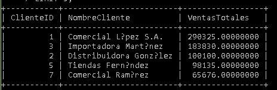

Código SQL
SELECT
c.ClienteID,
c.NombreCliente,
SUM(dp.Cantidad * dp.PrecioVenta * (1 - dp.Descuento / 100)) AS VentasTotales
FROM Clientes c
INNER JOIN Pedidos p ON c.ClienteID = p.ClienteID
INNER JOIN DetallesPedido dp ON p.PedidoID = dp.PedidoID
WHERE p.Estado = 'Entregado'
GROUP BY c.ClienteID, c.NombreCliente
ORDER BY VentasTotales DESC
LIMIT 5;
Resultado de la Consulta
En este apartado se coloca la captura de pantalla del resultado obtenido al ejecutar la consulta en MySQL.
